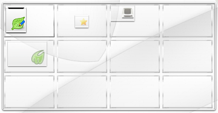
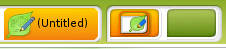
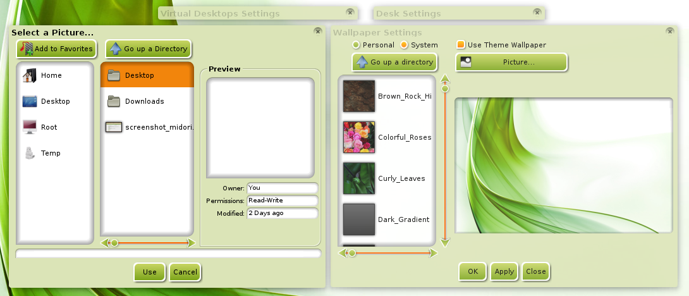

[kliknite na bilo koju sliku za uvećanje]
Virtualne Radne Površine (ponekad nazivane i "radni prostori") se koriste u skoro svim Menadžerima Prozora(bar u onim za Linux/Unix sisteme). Virtualne Radne Površine vam omogućavaju da organizujete svoj rad i obezbeđuju da različiti programi budu na različitim radnim površinama.Ovo možda izgleda kao neobična i nepotrebna funkcionalnost na prvi pogled, ali, budite sigurni, kada se jednom naviknete na njihovo korišćenje, vrlo je teško vratiti se na upotrebu samo jedne radne površine.
Menjanje Virtualnih Radnih Površina
Enlightenment (E17) omogućava nekoliko načina za prebacivanje između Virtaulnih Radnih Površina:
- Ako vam je uključen/učitan Pejdžer Gedžet na radnoj površini ili polici, samo kliknite na grafiku Radne Površine na kojoj želite da budete.
- Koristite prečice na tastaturi: Ctrl+Alt + <ArrowKey> u smeru u kome želite da se krećete.
- Izaberite vašu željenu radnu površinu preko Main Menu>Desktop>Virtual.
Vidite vaše Virtualne Radne Površine
Za grafičko, klikljivo predstavljanje vaših višestrukih radnih prostora, Enlightenment obezbeđuje Pejdžer Gedžet.
U zavisnosti koji Profil koristite ili vašu ličnu postavku, Pejdžer se može pojaviti na različite načine: različit broj redova i kolona sa thumbnail predstavljanjem radnih površina, bilo na radnoj površini ili na Polici.
Ovo je snimak ekrana Pejdžera na radnoj površini Fensi Profila:
{kind=link}
A ovako se Pejdžer pojavljuje na Polici u Laptop Profilu.
{kind=link}
Možete menjati Virtualne Radne Površine jednostavnim kliktanjem na njegov thumbnail.
Na svakom snimku ekrana, možete da primetite grafiku koja predstavlja otvorene programe na toj radnoj površini, sa aktivnim prozorom koji je neprovidan i neaktivnim koji je poluprovidan.
Na oba snimka ekrana, Leafpad je aktivan prozor i jedini otvoren prozor na prvoj radnoj površini (0, 0).
U Fensi Profilu snimak ekrana Pejdžer Gedžeta, Enlightenment dijalog, Terminology (E17-ov terminal), i Midori su otvoreni na drugoj (1, 0), trećoj (2, 0), i petoj (0, 2) radnoj površini, odnosno.
*Napomena: Neke
Teme nude opciju da ugrade tapetu(wallpaper) svake radne površine u svoj odnosni thumbnail prikaz.
To se može uraditi kroz podešavanja Pejdžer Gedžeta.
**Napomena:
Standardna(default) šema imenovanja za radne površine je sledeća:
Radna Površina [red],[kolona] i redovi i kolone počinju numeraciju od 0.
Prebacivanje Programa između Radnih Površina
U još jednom prikazu mnogostrukosti E17, postoji više od jednog načina za prebacivanje programa između Virtualnih Radnih Površina.
Prvi način je desni klik bilo gde na naslovnu traku(title bar) prozora koji želite da prebacite, klizite na dole do Move To i selektujete radnu površinu na koju želite da ga prebacite.
Drugi je, levi klik i odvučete (drag) ikonicu u gornjem levom uglu prozora, zatim je prevučete i spustite (drag-and-drop) u Pejdžer na thumbnail Virtualne Radne Površine gde želite da se nalazi.
*Napomena: Ako primetite da ste prebacili prozor na drugu Virtualnu Radnu Površinu i da se nalazi na poziciji koja je delimično van ekrana gde ne možete da uhvatite naslovnu traku (title bar) da repozicionirate prozor, postoji jednostavno rešenje:
samo pritisnite taster Alt i zatim kliknite i držite (click-and-hold)
bilo gde na vidljivom delu prozora. Tada možete da prevučete prozor gde želite. Druga opcija je da idete na
Main Menu>Windows i kliknete Cleanup Windows.
Podešavanja Virtualnih Radnih Površina
Kao i skoro sve u E17, niste zaključani sa postavkom Virtualne Radne Površine koja se pojavljuje pri instalaciji. U Fensi Profilu koji je predstavljen gore, Pejdžer ima četiri kolone i tri reda, što može biti mnogo za neke korisnike. Laptop Profil ima samo jedan red, što je lepo ali ograničeno. Bez brige. Oba mogu biti izmenjena prema vašim potrebama i željama!
Da promenite formu & izgled koristite dijalog Podešavanja Virtualnih Radnih Površina (Virtual Desktops
Settings) Možete mu pristupiti na dva načina:
1) Desni klik na Pejdžer i selektujte Podešavanja Virtualnih Radnih Površina (Virtual Desktop Settings).
2) Main Menu>Settings>All>Screen>Virtual Desktops.

U prozoru Podešavanja Virtualnih Radnih Površina koji se pojavi, možete dodavati broj redova i kolona sa odnosnim vertikalnim i horizontalnim klizačima.
Ispod ovoga se nalaze dva polja za čekiranje:
-Obrni pri prevlačenju objekata do ivice ekrana (Flip when dragging objects to the screen edge) je trenutno onesposobljen i nema efekta bilo da je čekiran ili ne.
-Obmotaj radne površine pri obrtanju (Wrap desktops around when flipping) kontroliše da li će se sistem vratiti nazad na prvu radnu površinu kada stigne do zadnje ili obrnuto.
Kliknite na bilo koju radnu površinu i prozor Podešavanja Desk-a (Desk Settings) će iskočiti. U ovom prozoru, ne samo da možete da promenite ime Virtualne Radne Površine, već možete da izaberete bilo koju sliku sa vašeg kompjutera kao pozadinu za bilo koju Virtualnu Radnu Površinu tako što ćete kliknuti na Set dugme. U prozoru Podešavanja Tapeta (Wallpaper Settings) koji iskoči, možete selektovati sistemski tapet ili možete da kliknete Picture dugme da otvori dijalog Select a Picture i tu selektujete vašu pozadinu:
{kind=link}
Upravljajte do direktorijuma sa vašom slikom za pozadinu za ovu Virtualnu Radnu Površinu, selektujte je i kliknite dugme OK. Ponovite ove korake za sve vaše Virtualne Radne Površine ako želite različite tapete na radnim površinama.